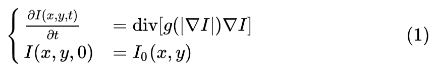

变分PDE、稀疏正则化与贝叶斯方法
Posted on Jun.3, 2021
RAISR
- 背景：
PDE
POCS
- 作为初作为初值条件 修复的结果会变好并且效率会更高
ND
Nonlinear Diffusion 非线性扩散- 概念 非线性扩散方程
由Perona和Malik于1990年提出，初版本也称经典P-M模型，是各向同性非线性扩散模型。 在图像平滑去噪方面，基于偏微分方程的各向异性的非线性扩散技术(anisotropic nonliear diffusion)在去噪的同时，能够 很好的保持了边缘，克服了一般的去噪算法存在的过平滑困难。这是一类自适应的平滑技术，根据图像的内容的不同采取不同的平滑方式。 该技术可以将平滑发弧度在边缘位置减弱，在非边缘区域增强；同时，在平行于边缘的方向进行平滑而在垂直于边缘的方向不进行平滑， 达到平滑噪声的同时比较好的保持图像中的结构或者边缘的目的。
线性 → 非线性：边缘纹理还是其他结构都会等同于噪声一起滤除 → 传导系数会随着图像的局部特征改变而改变 各向同性 → 各向异性：平行于边缘的方向、垂直于边缘的方向区别对待
基于非线性扩散(偏微分)方程的图像处理方法是图像研究的一个热点。它从分析图像去噪的机理入手，结合数学形态学、微分几何、射影几何等数学工具， 建立了滤波和偏微分方程相关的公理体系。另外，它在图像重构、图像分割、图 像识别、遥感图像处理、图像分析、边缘检测、图像插值、医学图像处理、 动态图像修补、立体视觉深度检测、运动分析等方面得到了一定的应用。
PM扩散方程为：它的来源是将梯度的模值信息融合到传输系数中，